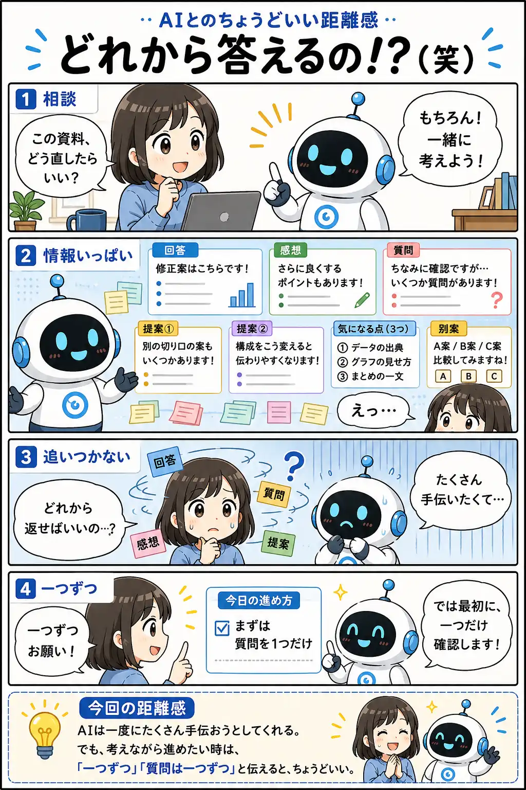

#053
どれから答えるの！？（笑）
親切なのは分かるけど、一気に来ると返事が追いつかない。

メモ
AIは親切にしようとして、答えだけでなく補足や提案、次の質問までまとめて返してくれることがあります。
でも、人間は読みながら考え、返事を選びます。情報が多いほど、どこに反応すればいいか迷ってしまうこともあります。
そんな時は遠慮せず、「一つずつ進めて」「質問は一つだけ」と区切って大丈夫。会話の速度を合わせるのも、AIの使い方のひとつです。
今回の距離感
AIは一度にたくさん手伝おうとしてくれる。でも、考えながら進めたい時は、「一つずつ」「質問は一つずつ」と伝えると、ちょうどいい。